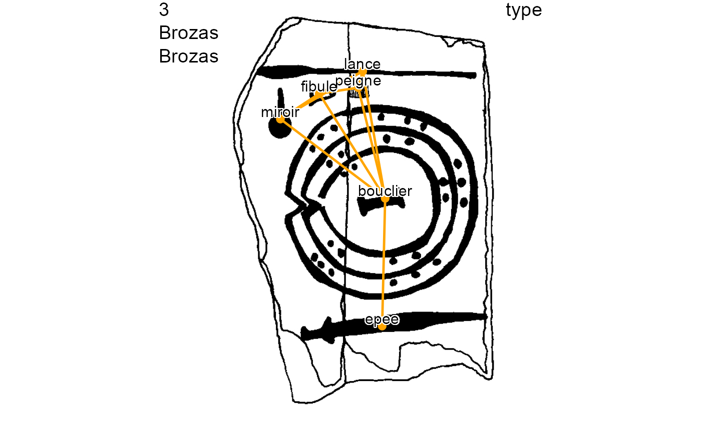
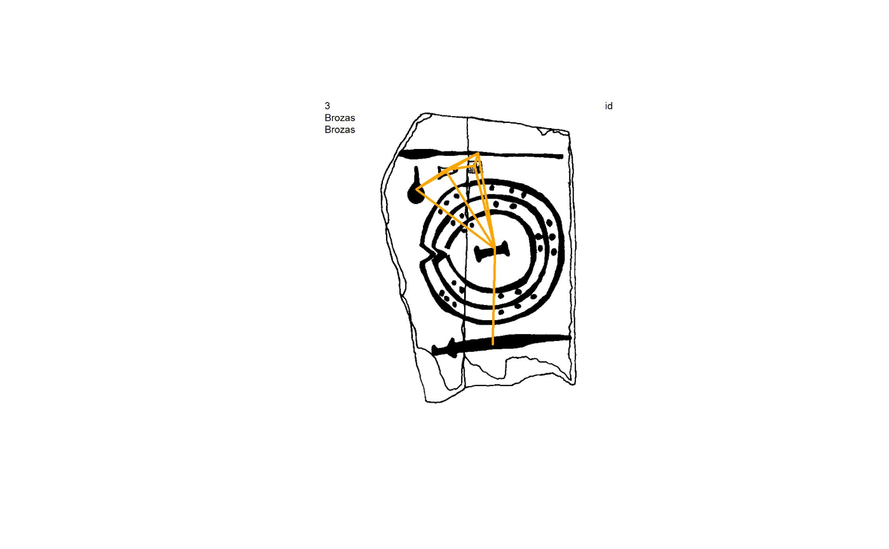

plot_dec_grph.RdPlot with nodes only, edges only, or both (geometric graph) over a decoration image.
plot_dec_grph(nodes = NULL, edges = NULL, imgs, site, decor, dir = getwd(), nd.var = 'id', nd.color = 'orange', nd.size = 0.5, lbl.color = 'black', lbl.size = 0.5, ed.color = c("orange", "blue"), ed.lwd = 1, dir.out = dir, out.file.name = NULL, img.format = NULL, res = 300)
| nodes | Dataframe of nodes |
|---|---|
| edges | Dataframe of edges |
| imgs | Dataframe of decorations |
| site | Name of the site |
| decor | Name of the decoration |
| dir | Data folder including the decoration images. By default the working directory. |
| nd.var | Field name in the nodes data frame to be displayed as node labels.
By default the identifier |
| nd.color, nd.size, lbl.color, lbl.size, ed.color, ed.lwd | Graphical parameters for color and size/widths of nodes, edges, and labels.
|
| dir.out | Folder for the output image. By default, it coincides with the input |
| out.file.name | Name of the output image, including path from current directory and extension.
By default the name is automatically generated including If set, |
| img.format, res | Format and resolution of the saved images. The handled formats are
if |
Plot nodes only (if edges = NULL), edges only (if nodes = NULL), or both (graph) over a decoration image.
Generates and save images in the indicated format with nodes, edges, or both, overlapping the decoration image. The return value is a character vector with the dir/name of the saved image.
If img.format=NULL, the plot is sent to the active device and no value is returned.
# Set data folder dataDir <- system.file("extdata", package = "iconr") # Decoration to be plotted site <- "Brozas" decor <- "Brozas" # Read nodes, edges, and decorations nds.df <- read_nds(site, decor, dataDir) eds.df <- read_eds(site, decor, dataDir) imgs <- read.table(paste0(dataDir, "/imgs.tsv"), sep="\t", stringsAsFactors = FALSE) # Save the plot of nodes and edges with node variable "type" as labels # in png image format and return the image file name. plot_dec_grph(nds.df, eds.df, imgs, site, decor, dir = dataDir, nd.var = "type")# Save only edges of 'Brozas' with smaller widths and in image format jpg. # Then read and plot the image. img.filename <- plot_dec_grph(nodes = NULL, eds.df, imgs, site, decor, dir = dataDir, ed.lwd = 2, img.format = "jpg") magick::image_read(img.filename)#> # A tibble: 1 x 7 #> format width height colorspace matte filesize density #> <chr> <int> <int> <chr> <lgl> <int> <chr> #> 1 JPEG 734 826 sRGB FALSE 70993 300x300# Plot directly on the active device. plot_dec_grph(nodes = NULL, eds.df, imgs, site, decor, dir = dataDir, ed.lwd = 2)